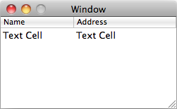

Please note: this article is part of the older "Objective-C era" on Cocoa with Love. I don't keep these articles up-to-date; please be wary of broken code or potentially out-of-date information. Read "A new era for Cocoa with Love" for more.
5 key-value coding approaches in Cocoa
Key-value coding (KVC) is a way of decoupling a generic action from the specific properties it may need to act upon. It is most commonly associated with the NSKeyValueCoding protocol but there are a number of other ways to achieve the same effect. In this post, I look at why key-value coding is important and show you 5 different ways — each with their own particular advantages — to implement this pattern.
Introduction
The NSKeyValueCoding protocol has been in Cocoa since Mac OS X 10.0 but it first made a real mark in Mac OS X 10.3 when user-interface bindings demonstrated their potential — allowing user-interface controls to connect to properties on objects by configuring the data, not changing the code.
While the core concepts in key-value coding exist (or can be implemented) in most programming frameworks, key-value coding is both prevalent and pervasive throughout Cocoa in a way that is uncommon, certainly among other compiled application frameworks.
Despite its prevalence, you can avoid key-value coding if you choose. However, Apple introduced it for a reason — it is a simple design pattern that can be highly beneficial to your code. To that end, I'm going to spend this post talking about what key-value coding is, how it can improve your code and different approaches you can use to achieve the effect.
What is key-value coding?
The idea behind key-value coding is pretty simple: instead of directly getting and setting specific properties on an object, key-value coding involves passing in a "key" (usually a string) and getting or setting the property associated with that key.
This may sound a lot like NSDictionary
For example:
// Set a property directly...
someObject.someProperty = someValue;
// ...or set the same property using key-value coding
[someObject setValue:someValue forKey:@"someProperty"];Why would you want to do this? The answer is that it decouples the action of setting a value for a property from the specific property involved.
Imagine a table for editing names and addresses:
Without key-value coding, the NSTableViewDataSource method to handle an edit for one of the rows might look like this:
- (void)tableView:(NSTableView *)aTableView
setObjectValue:(NSString *)anObject
forTableColumn:(NSTableColumn *)aTableColumn
row:(int)rowIndex
{
if ([[aTableColumn identifier] isEqual:@"name"])
{
[[records objectAtIndex:rowIndex] setName:anObject];
}
else if ([[aTableColumn identifier] isEqual:@"address"])
{
[[records objectAtIndex:rowIndex] setAddress:anObject];
}
}With key-value coding, the method becomes:
- (void)tableView:(NSTableView *)aTableView
setObjectValue:(NSString *)anObject
forTableColumn:(NSTableColumn *)aTableColumn
row:(int)rowIndex
{
[[records objectAtIndex:rowIndex] setValue:anObject forKey:[aTableColumn identifier]];
}I spoke about bindings before: this approach isn't using user-interface bindings (that would require no code at all). This is really showing a simplified way that bindings might be implemented.
This key-value coding approach is better because it doesn't have to handle the edit of each property as a separate condition. This is the essence of key-value coding.
And key-value coding remains just as efficient as the data set increases in size. A table with 1,000 columns would require the same amount of code to edit.
KVC approach 1: NSKeyValueCoding protocol
All the key-value coding that I've show so far uses the NSKeyValueCoding protocol. Actually, I call it a protocol but it is actually an "informal protocol" (a category on NSObject).
This category implements the setValue:forKey: and valueForKey: methods that you can use for setting and getting values by NSString keys.
Advantages
- Finds getter and setter methods automatically and will even get or set ivars directly if a getter or setter can't be found. This means that most properties automatically support
NSKeyValueCoding. Learn more about the search paths in my Key Value Information post. - Includes key paths (for traversing multiple properties).
- Integrates with
NSKeyValueObservingfor implementing the Observer design pattern. - Offers fallbacks and ways of dealing with undefined keys.
Disadvantages
- The extended search path makes this one of the slowest key-value coding approaches (see my earlier performance-related post on Replacing Core Data Key Paths).
- Requires either a method or ivar on the class matching the property name that can be found by
NSKeyValueCoding. - Only supports
NSStrings as property keys.
KVC approach 2: Manual subsets of NSKeyValueCoding behavior
The NSKeyValueCoding protocol looks up methods by selector names and looks up ivars by name.
This is work that you can do yourself.
// Manual KVC setter method implementation
NSString *setterString = [@"set" stringByAppendingString:[someKeyString capitalizedString]];
[someObject performSelector:NSSelectorFromString(setterString) withObject:someValue];
// Manual KVC ivar setter
object_setInstanceVariable(someObject, someKeyString, someValue);Why would you do this instead of using the NSKeyValueCoding approach? You would only use this in situations where you want to avoid methods or ivars that would ordinarily be found by NSKeyValueCoding. This approach allows you to define your own lookup path.
Advantages
- More control over the lookup path than with
NSKeyValueCoding. - Potentially faster than
NSKeyValueCoding. - Will work for classes that don't inherit from
NSObjectand hence don't haveNSKeyValueCodingimplementations. - Manual method implementations can get and set non-object values.
Disadvantages
- Less flexible than
NSKeyValueCoding. - In most cases, it is more work than using
NSKeyValueCoding.
KVC approach 3: Associated objects
The Objective-C 2.0 runtime (used on the iPhone and 64-bit Mac OS X apps) allows you to set any object to be associated with any other object. This allows any object in the runtime to have an arbitrary set of extra properties set by key, without support from ivars or methods on the object itself.
objc_setAssociatedObject(someObject, someKey, someValue, OBJC_ASSOCIATION_RETAIN_NONATOMIC);The main reason why you would use this approach is that you want to set properties on an object from the outside — i.e. without the object supporting, being involved with or even knowing about the property access. Properties can be set on an object by other parts of the program for their own purposes.
Advantages
- No support from the object (methods or ivars) required.
- Key can be any pointer (so can the object if
OBJC_ASSOCIATION_ASSIGNis used). - Potentially the fastest KVC approach.
Disadvantages
- Key is a pointer, not an object, so if an object is used, it must be a pointer-unique object (i.e. won't work if you try to get and set with different allocations of the same string value).
- Does not affect ivars or methods on the object. Generally this means if you want the object itself to know about the change, you must use a different approach.
KVC approach 4: selectors as keys
Key-value coding is primarily about looking up a property for a key and then acting upon the property found during lookup.
Objective-C has a lookup at its very core — the method lookup. The keys for this lookup are selectors.
objc_msgSend(someObject, someSetterSelector, someValue);This approach is similar to manually implementing the method part of NSKeyValueCoding but rather than forming a selector string from the key and then looking up the selector string, this approach opts to use the selector as the key.
The disadvantage this approach has is that separate selectors are needed for getting and setting.
Advantages
- Fastest approach that goes through methods (which is good since methods are overrideable and hence more subclass friendly).
- Can get and set non-object data (although
objc_msgSend_fpretandobjc_msgSend_stretneed to be used to getfloat,doubleandstructproperties).
Disadvantages
- Different keys required for getting and setting.
- Selectors are not objects and are therefore can't be stored directly in Objective-C arrays and dictionaries (must use CoreFoundation or
NSValuewrappers).
KVC approach 5: do it yourself
The final approach to key-value coding is to handle the implementation yourself. This is something you would do if you needed maximum flexibility (for handling unusual keys/values) or wanted to expose different key-value sets from a single object.
The easiest way to do this is to expose a getter and a setter method and simply get or set the values on a dictionary contained by the object.
- (void)setCollectionValue:(id)value forKey:(NSString *)key
{
[collectionDictionary setObject:value forKey:key];
}
- (id)getCollectionValueForKey:(NSString *)key
{
return [collectionDictionary objectForKey:key];
}To handle the internal storage of the values, you could use any of the key-value storage structures in Cocoa:
NSMutableDictionaryNSMapTableCFMutableDictionaryRef- associated objects on
selfor other objects (see above)
or your own storage solution.
Advantages
- A single object can exposes multiple, separate collections.
- Can get and set any data type supported by the underlying collection.
- The most flexible approach for fallbacks and handling special cases.
Disadvantages
- Must be implemented by the target class (will not work for arbitrary objects).
- Doesn't interoperate with
NSKeyValueObservingor any of the otherNSKeyValueCodingconcepts.
Conclusion
Using key-value coding is not mandatory — it is certainly possible to implement whole projects without it. However, it is one of the best code patterns for reducing repetitious code and making classes more reusable by decoupling actions from properties and data.
As you can see, there are a number of different kinds of key-value coding you can use in your program. NSKeyValueCoding is probably the most flexible, reusable and best supported throughout Cocoa, so unless you need one of the advantages of the other approaches or you want to keep your solution to a problem narrow, it is probably the best approach to use.
What is a meta-class in Objective-C?